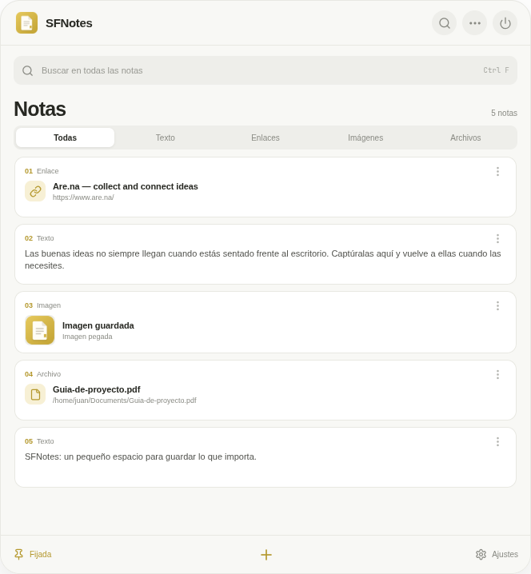
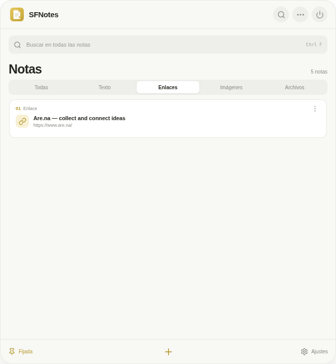
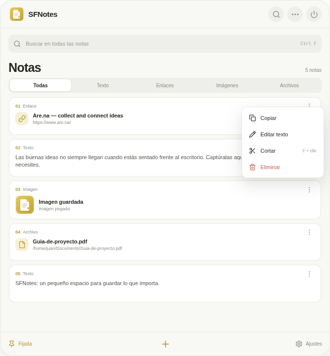
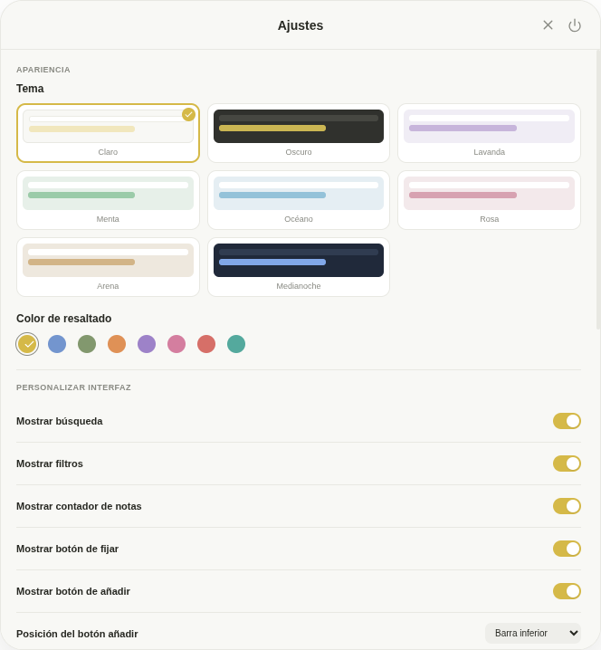
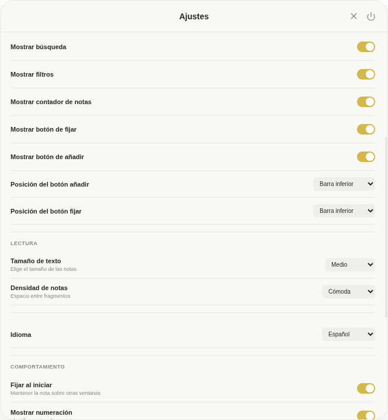
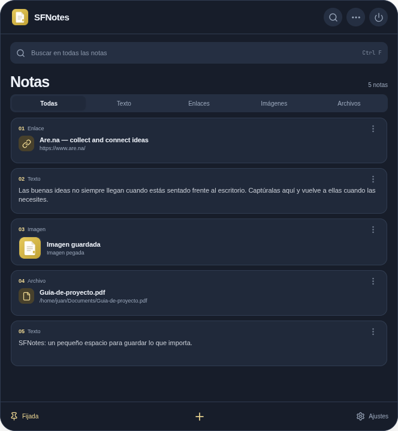
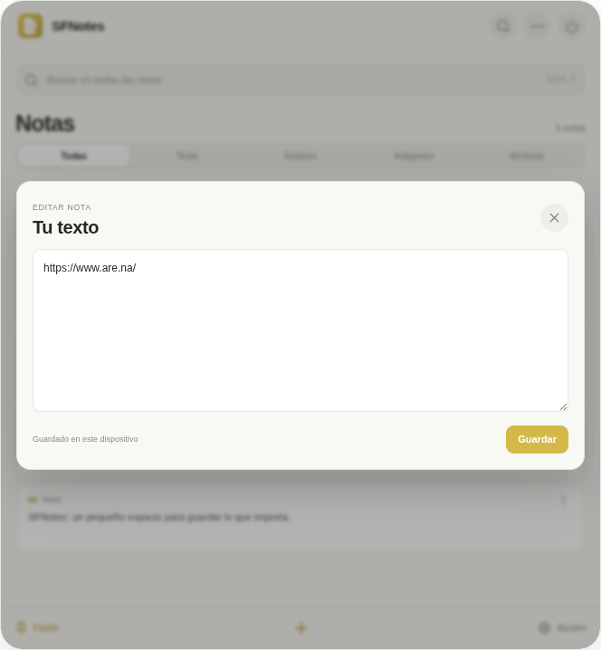

Save anything
Texts, links, images and files in a handy list. Paste from the clipboard or add files from the menu.
TextLinksImagesFiles
A SMALL SPACE FOR YOUR BIG IDEAS
Keep texts, links, images and files in a floating note on your desktop. Find and copy them whenever you need them.

LESS SEARCHING, MORE FLOW
A quiet corner on your desktop for the things you are always looking for.
Texts, links, images and files in a handy list. Paste from the clipboard or add files from the menu.
Search by content and filter by note type to get to what you need quickly.
Choose from eight themes, adjust colors, and hide or move controls to make the window your own.
IT'S THAT SIMPLE
SFNotes is made for saving something in seconds and coming back to it without interrupting your work.
Use the “+” button or keyboard shortcut to save whatever is on your clipboard.
Search, filter and organize your notes. Customize SFNotes in Settings.
Click a note to copy it again. Your data stays on your device.
SEE HOW IT WORKS
Take a look inside SFNotes and see how it fits the way you save and find things.

Filter notes by text, links, images or files to get to what you need.

Copy, edit, cut or delete a note from its menu.

Try eight themes and change the highlight color to make it yours.

Show or hide search, filters, the counter and buttons. Choose where controls appear.

The Midnight theme offers a darker look for working in low light.

Open a note to change its content and save your changes on this device.
READY WHEN YOU ARE
Download SFNotes for free. Choose your system and start saving what matters.
Windows 10 and 11 · x64
Download .exe ↓Intel and Apple Silicon
Download .dmg ↓AppImage, DEB and RPM · x64
Download AppImage ↓Looking for another format? See all downloads on GitHub ↗
Latest version · 1.0.0